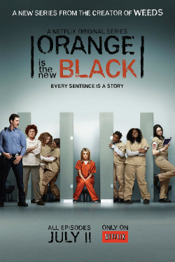
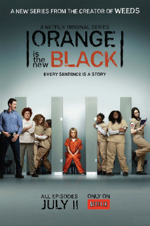
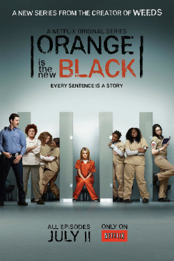

Em Atypical, Sam Gardner é um jovem autista de 18 anos que está em busca de sua própria independência, nesta jornada repleta de desafios, mas que rende ele e sua família aprendem a lidar com as dificuldades da vida e descobrem que o significado de "ser um pessoa normal" não é tão óbvio assim.
Em The 100 quando uma guerra nuclear destruiu a civilização e o planeta Terra, os únicos sobreviventes foram 400 pessoas que estavam em 12 estações espaciais em órbita. Para garantir o futuro, um grupo de cem jovens é enviado à superfície da Terra para descobrir se ela está habitável.
Brooklyn Nine-nine é uma série que gira em torno de Jake Peralta, um imaturo, mas talentoso, detetive da polícia de Nova York na fictícia 99.ª Delegacia do Brooklyn, que muitas vezes entra em conflito com seu novo comandante, o sério e severo capitão Raymond Holt.
The OA é uma série que fala sobre Prairie Johnson, uma jovem adotada e inicialmente cega, que ressurge depois de ter desaparecido por sete anos. Após seu retorno, Prairie se auto denomina como "OA", de "Original Angel" ("Anjo Original" em tradução livre), ela contém cicatrizes nas costas e a capacidade de enxergar.
Orange is The New Black é uma série que fala sobre Piper Chapman, é uma mulher por volta de seus 30 anos que é sentenciada a 15 meses de prisão após ter cometido crimes para sua ex-namorada, a traficante Alex, que não vê há mais de uma década. Piper troca a sua vida confortável de Nova York, com o noivo Larry, pelo macacão laranja, e cumpre sua sentença na Penitenciária Feminina de Litchfield. O que ela não espera é encontrar a ex cumprindo pena no mesmo lugar.
